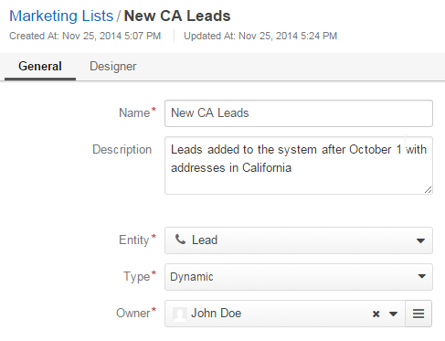

Marketing Lists¶
With Oro application, you can automatically generate a marketing list of contacts that will be used for marketing purposes (mass call or mailing). For example, you can create a list of personal and contact details of customer users who registered after October 1 and whose shipping address is in California.
With marketing lists, you can run Email Campaigns in Oro application. You can also synchronize Oro application Marketing lists with Subscribers Lists in MailChimp and Address Books in dotmailer.
Marketing lists may be based on the contacts from the following items:
- Accounts (via primary email of default contact)
- Customer users
- Quotes (via customer user email)
- Orders (via customer user email)
- Shopping lists
- Business Customer
- Lead
- Contact
Marketing activity may be monitored in the context of these items, in the Marketing Activity section.
The way to create and manage contacts in Marketing Lists is described below.
Create Marketing Lists¶
To create a new Marketing List:
Navigate to Marketing > Marketing Lists in the main menu.
Click Create Marketing List.
The Create Marketing List page opens.
In the General section, provide the following information:
Field Description Name Name used to refer to the marketing list in the system. Entity Choose an entity from the drop-down. Only entities that have contact details (E-mail or phone number) are available. Records of the chosen entity and entities related to it will be used to create the list of contacts. Type Chose the list type from the drop-down:
- Dynamic lists are updated as soon as any changes have taken place in the system.
- On demand lists will be updated only following the user request
(click
 to refresh the table on the view page of the marketing list record).
to refresh the table on the view page of the marketing list record).
Owner Limits the list of users that can manage the marketing list to the users, whose roles allow managing marketing lists of the owner (e.g. the owner, members of the same business unit, system administrator, etc.). Description Free text to help you and other users understand the purpose or peculiarities of the list in the future. Note
Custom fields may be added subject to specific business needs.
In the Filters section, define the Activity and/or Data audit and/or Field Condition and/or Condition Group filters that will be used to select the records for the list.
More information about the ways to define filters is provided in the Filters Management guide.
The contacts that match the filter condition will be automatically subscribed to the Mailing list. You can later unsubscribe a contact or remove them from the mailing list.
In the Columns section, define the set of fields that will be shown in the Marketing List details on the general page for every target contact.

Note
Marketing activities require some contact information, so at least one column that contains it must be selected. A list of these fields is provided in the Designer section. (e.g. for contacts these are Primary Email and Primary Phone fields).

For every column:
- Choose the fields from the drop-down in the Column section.
- Modify the label if necessary. By default, the field name is used.
- Define the sorting order if you want the grid to be sorted by the value in this column.
- Click Add.
Use action icons in the last column to edit the grid:
- Delete a column from the list with
- Edit the column settings with
- Change the column position, dragging the column by the icon
Once you finish configuring the marketing list, click Save and Close in the top right corner of the page.
Now, you can use contacts of your marketing lists to run dedicated campaigns.
Manage Marketing Lists¶
The following actions are available for a marketing list after you navigate to the Marketing > Marketing Lists in the main menu:
- Delete the list from the system:
- Edit the Marketing list:
- View the Marketing list details:
View Marketing List Details¶
To view the Marketing List details:
Navigate to Marketing > Marketing Lists in the main menu.
Click on the Marketing List to preview its contents.
The following page opens.
Here you can preview the details of users that will be contacted via the campaigns that are based on this mailing list. You can also manage the marketing list as described in the sections below.
Details provide you with the following insights:
- A quick preview of the contact data — the columns added to the marketing list (e.g. when creating a marketing list).
- TOTAL CONTACTED — the number of times a record of this marketing list was contacted within different E-mail campaigns.
- LAST CONTACTED — the date when a record of this marketing list was last contacted within different Email campaigns.
- SUBSCRIBED — status of the contact’s subscription. Initially, all the contacts in the list are subscribed (the column value is “Yes”). When after the Email campaigns that was targeting the marketing list, a user has unsubscribed, the value changes to “No” and the user is excluded from the following mailings.
Note
When the same record is a part of different marketing lists, its data from other marketing lists will not affect the TOTAL CONTACTED and LAST CONTACTED values in the list you are viewing.
Manage Contact Subscription¶
To toggle the contact’s subscription to the marketing list:
Navigate to Marketing > Marketing Lists in the main menu.
Click on the Marketing List to preview its contents.
The following page opens.
For the necessary contact, hover over the more actions menu and modify the contact’s subscription to the marketing list by clicking
 and .
and .
When not subscribed, the person will not be contacted in the email campaigns.
Remove the Person From the Marketing List¶
To remove the person from the marketing list:
Navigate to Marketing > Marketing Lists in the main menu.
Click on the Marketing List to preview its contents.
The following page opens.
For the necessary contact, hover over the more actions menu and click
 to remove the item from the list.
to remove the item from the list.
As soon as at least one item has been deleted from the marketing list, it is moved to the Removed Items section.
Note
Navigate to the contact details page by clicking next to it.
Restore the contact in the marketing list by clicking  next to it.
next to it.
Synchronize a Marketing List with External System¶
As soon as Oro application has been integrated with a third party system, to which a marketing list may be mapped, you will see Connect to buttons, with which you can, for example, map the list to Subscribers Lists in MailChimp or Address Books in dotmailer.

Delete a Marketing List¶
To delete a marketing list:
- Navigate to Marketing > Marketing Lists in the main menu.
- For the necessary marketing list, hover over the more actions menu and click .
Related Topics on Marketing Automation